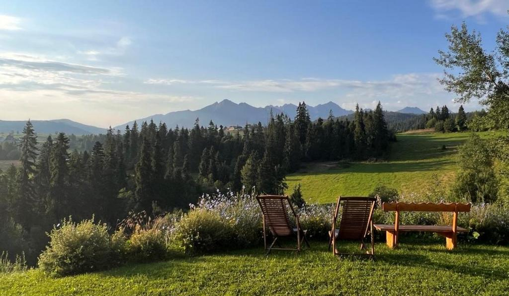
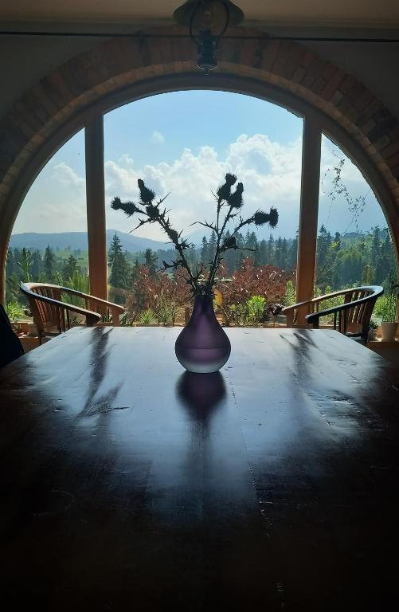
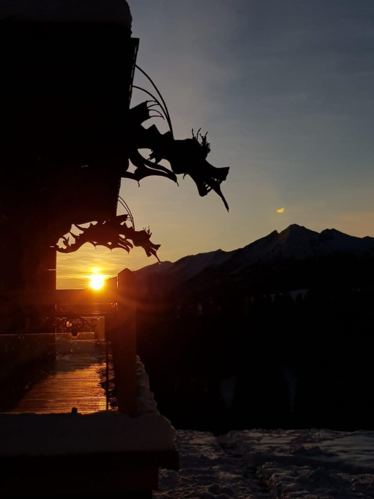

<style>
  :root {
    --color-gold: #c5a059;
    --color-bg-dark: #121212;
    --color-card-bg: #181818;
    --color-text-main: #f3f4f6;
    --color-text-muted: #9ca3af;
  }

  .history-page {
    background-color: var(--color-bg-dark) !important;
    color: var(--color-text-main) !important;
    min-height: 100vh;
    padding-bottom: 60px;
    font-family: 'Inter', system-ui, -apple-system, sans-serif;
  }

  /* Sekcja Hero z obrazem tła */
 .history-hero {
    position: relative;
    background: linear-gradient(rgba(0, 0, 0, 0.3), rgba(18, 18, 18, 0.6)), 
                url('../assets/img/historia-hero.jpg') center/cover no-repeat;
    
    /* Zapewnia pełną wysokość ekranu (dvh działa idealnie też na telefonach) */
    min-height: 100dvh; 
    
    /* Rozciąga sekcję i centruje zawartość w pionie oraz poziomie */
    display: flex;
    flex-direction: column;
    justify-content: center;
    align-items: center;

    /* Mniejszy padding chroni treść przy krawędziach na małych ekranach */
    padding: 20px; 
    text-align: center;
    border-bottom: 1px solid rgba(255, 255, 255, 0.05);

    /* Opcjonalnie: zapobiega niechcianemu przewijaniu od wewnętrznych marginesów */
    box-sizing: border-box; 
}

  .history-hero-title {
    font-size: 2.8rem;
    font-weight: 400;
    letter-spacing: 2px;
    color: #ffffff !important;
    margin: 0;
  }

  .history-hero-title::after {
    content: '' !important;
    display: block !important;
    width: 140px !important;
    height: 2px !important;
    background-color: var(--color-gold) !important;
    margin: 18px auto 0 auto !important;
  }

  .history-hero-desc {
    margin: 24px auto 0 auto;
    color: #e5e7eb;
    font-size: 1.25rem;
    font-weight: 300;
    max-width: 750px;
    line-height: 1.7;
    font-style: italic;
  }

  /* Zawężony kontener główny dla sekcji */
  .history-container {
    max-width: 920px;
    margin: 0 auto;
    padding: 60px 20px 20px 20px;
    display: flex;
    flex-direction: column;
    gap: 80px;
  }

  /* Ogólne style nagłówków sekcji */
  .section-header {
    text-align: center;
    margin-bottom: 30px;
  }

  .section-title {
    font-size: 2rem;
    font-weight: 400;
    letter-spacing: 1.5px;
    color: #ffffff !important;
    margin: 0;
    text-align: center !important;
  }

  .section-title::after {
    content: '' !important;
    display: block !important;
    width: 120px !important;
    height: 2px !important;
    background-color: var(--color-gold) !important;
    margin: 14px auto 0 auto !important;
  }

  /* Sekcja 1: Pełna szerokość (Tekst + Zdjęcie poniżej) */
  .full-width-section {
    text-align: center;
    max-width: 780px;
    margin: 0 auto;
  }

  .full-width-text {
    color: #ffffff;
    font-size: 1.05rem;
    line-height: 1.8;
    font-weight: 300;
    margin-bottom: 30px;
  }

  .quote-highlight {
    color: var(--color-gold);
    font-weight: 400;
    font-size: 1.15rem;
    display: block;
    margin-top: 16px;
  }

  .full-width-img-wrapper {
    width: 100%;
    border-radius: 8px;
    overflow: hidden;
    box-shadow: 0 8px 25px rgba(0, 0, 0, 0.5);
  }

  .full-width-img-wrapper img {
    width: 100%;
    height: auto;
    display: block;
  }

  /* Układ dwukolumnowy z zachowaniem naturalnych proporcji */
  .split-section {
    display: grid;
    grid-template-columns: 1fr 1fr;
    gap: 40px;
    align-items: center;
  }

  .split-img-wrapper {
    width: 100%;
    border-radius: 8px;
    overflow: hidden;
    box-shadow: 0 8px 25px rgba(0, 0, 0, 0.5);
  }

  .split-img-wrapper img {
    width: 100%;
    height: auto;
    display: block;
  }

  .split-content {
    display: flex;
    flex-direction: column;
    justify-content: center;
  }

  .split-text {
    color: #ffffff;
    font-size: 1.05rem;
    line-height: 1.8;
    font-weight: 300;
  }

  /* Wykaz z kropkami dla Sekcji "Dom z duszą" */
  .bullet-list {
    list-style: none;
    padding: 0;
    margin: 16px 0;
  }

  .bullet-list li {
    position: relative;
    padding-left: 24px;
    margin-bottom: 8px;
    color: #e5e7eb;
  }

  .bullet-list li::before {
    content: '•';
    color: var(--color-gold);
    font-size: 1.5rem;
    position: absolute;
    left: 0;
    top: -4px;
  }

  /* Przycisk akcji (CTA) */
  .cta-btn {
    display: inline-block;
    margin-top: 24px;
    padding: 14px 32px;
    background-color: transparent;
    color: var(--color-gold) !important;
    border: 1px solid var(--color-gold);
    border-radius: 4px;
    text-decoration: none;
    font-size: 0.95rem;
    letter-spacing: 1.5px;
    text-transform: uppercase;
    transition: all 0.3s ease;
    width: fit-content;
  }

  .cta-btn:hover {
    background-color: var(--color-gold);
    color: #121212 !important;
    box-shadow: 0 4px 15px rgba(197, 160, 89, 0.3);
  }

  /* Responsywność */
  @media (max-width: 868px) {
    .split-section {
      grid-template-columns: 1fr;
      gap: 24px;
    }

    .split-section.reverse .split-img-wrapper {
      order: -1;
    }

    .history-hero-title { font-size: 2rem; }
    .history-hero-desc { font-size: 1.05rem; }
    .section-title { font-size: 1.6rem; }

    .cta-btn {
      margin: 24px auto 0 auto;
    }
  }
</style>

<main class="history-page">

  <!-- Sekcja Hero z Tłem i Tytułem -->
  <section class="history-hero">
    <h1 class="history-hero-title">GUESTHOUSE HISTORY</h1>
    <p class="history-hero-desc">
      The guesthouse was created as the fulfillment of a dream by writer Maria Nurowska, who was looking for a place to live and find literary inspiration.
    </p>
  </section>

  <div class="history-container">

    <!-- SEKCJA 1: Niezwykła Opowieść (Tekst po lewej, prawa strona pusta) -->
    <section>
      <div class="section-header">
        <h2 class="section-title">An Extraordinary Story</h2>
      </div>
      <div class="split-section">
        <div class="split-content">
          <div class="split-text" style="text-align: left;">
            <p style="margin-bottom: 12px;">
              The history of Dom Pod Smokami begins with an extraordinary tale. 
              Gustaw Holoubek once told Maria Nurowska about a certain meadow on Wysoki Wierch in Bukowina Tatrzańska – a place that "heals the soul".
            </p>
            <p style="margin-bottom: 16px;">
              This story deeply remained in the writer's memory and returned when she was looking for her own place on Earth.
            </p>
            <span class="quote-highlight" style="display: block; margin-top: 16px;">
              When she saw this clearing, the thought appeared: "my home should stand right here".
            </span>
            
          </div>
        </div>
        <!-- Prawa strona pozostaje pusta -->
        <div></div>
      </div>

      <!-- Zdjęcie umieszczone pod tekstem i pustym polem -->
      <div class="full-width-img-wrapper" style="margin-top: 30px;">
        
      </div>
    </section>

    <!-- SEKCJA 2: Od marzenia do rzeczywistości (Zdjęcie LEWO, Tekst PRAWO) -->
    <section>
      <div class="section-header">
        <h2 class="section-title">From a Dream to Reality</h2>
      </div>
      <div class="split-section">
        <div class="split-img-wrapper">
          
        </div>
        <div class="split-content">
          <div class="split-text">
            <p style="margin-bottom: 12px;">
              In the early 2000s, Maria Nurowska made a bold decision – she left Warsaw and moved to the Tatras. On a Bukowina hill, she decided to build a house that would become her sanctuary and creative space.
            </p>
            <p style="margin-bottom: 12px;">
              The house was built in stages, financed by her literary work. From the very beginning, it was meant to be more than just a private space – a place of meetings, silence, and rest.
            </p>
            <p>
              Its windows offer panoramic views of some of the most beautiful Tatra peaks, while the quiet and space encourage inner peace and relaxation.
            </p>
          </div>
        </div>
      </div>
    </section>

    <!-- SEKCJA 3: Skąd nazwa „Pod Smokami”? (Tekst LEWO, Zdjęcie PRAWO) -->
    <section>
      <div class="section-header">
        <h2 class="section-title">Where does the name "Pod Smokami" come from?</h2>
      </div>
      <div class="split-section reverse">
        <div class="split-content">
          <div class="split-text">
            <p style="margin-bottom: 16px; font-weight: 400; color: #ffffff;">
              The name of the house is not a coincidence.
            </p>
            <p style="margin-bottom: 16px;">
              On the edges of its roof, there are characteristic dragon sculptures (gutter gargoyles) – symbols of wisdom and guardians. As the owner used to say, the dragons <em>"guard her treasure, which is this house"</em>.
            </p>
            <p>
              It is they that give the place its unique character and make Dom Pod Smokami so easily recognizable.
            </p>
          </div>
        </div>
        <div class="split-img-wrapper">
          
        </div>
      </div>
    </section>

    <!-- SEKCJA 4: Dom z duszą (Zdjęcie LEWO, Tekst PRAWO) -->
    <section>
      <div class="section-header">
        <h2 class="section-title">A House with a Soul</h2>
      </div>
      <div class="split-section">
        <div class="split-img-wrapper">
          <img src="../assets/img/taras-lesne-doliny-
